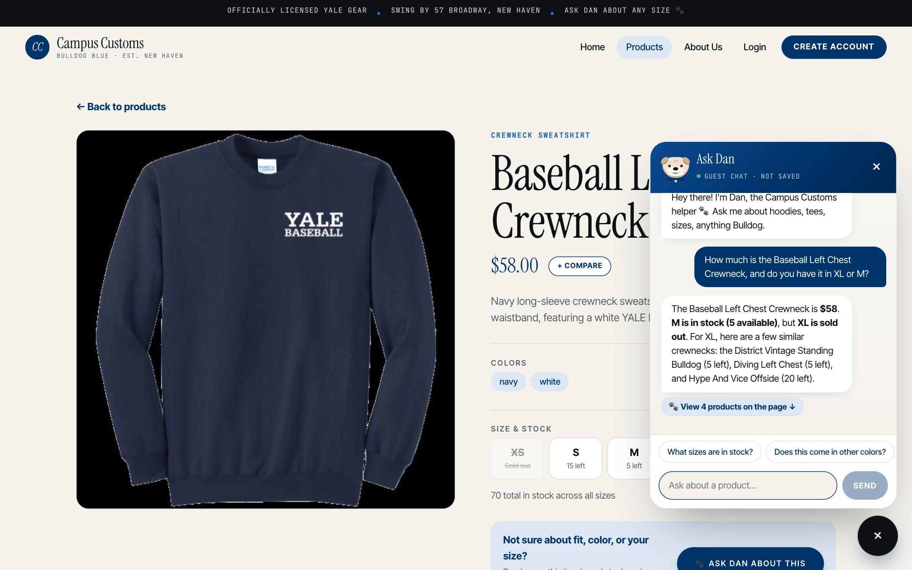
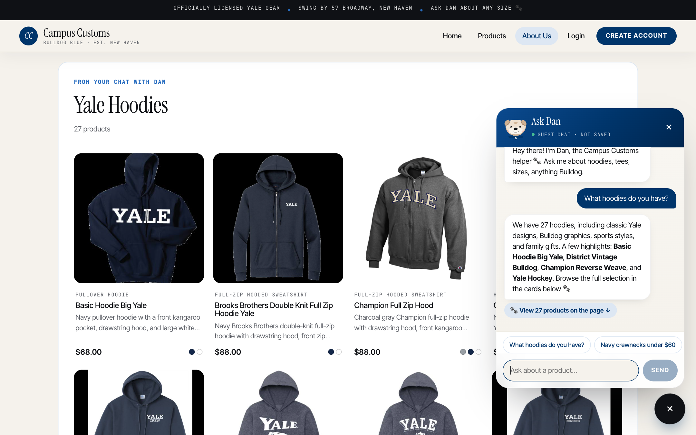
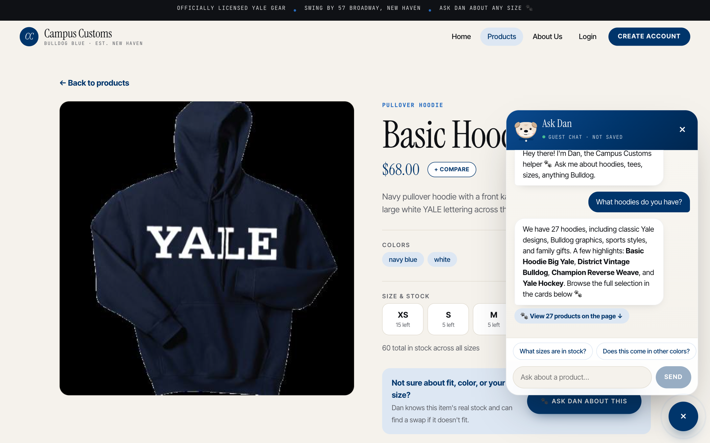
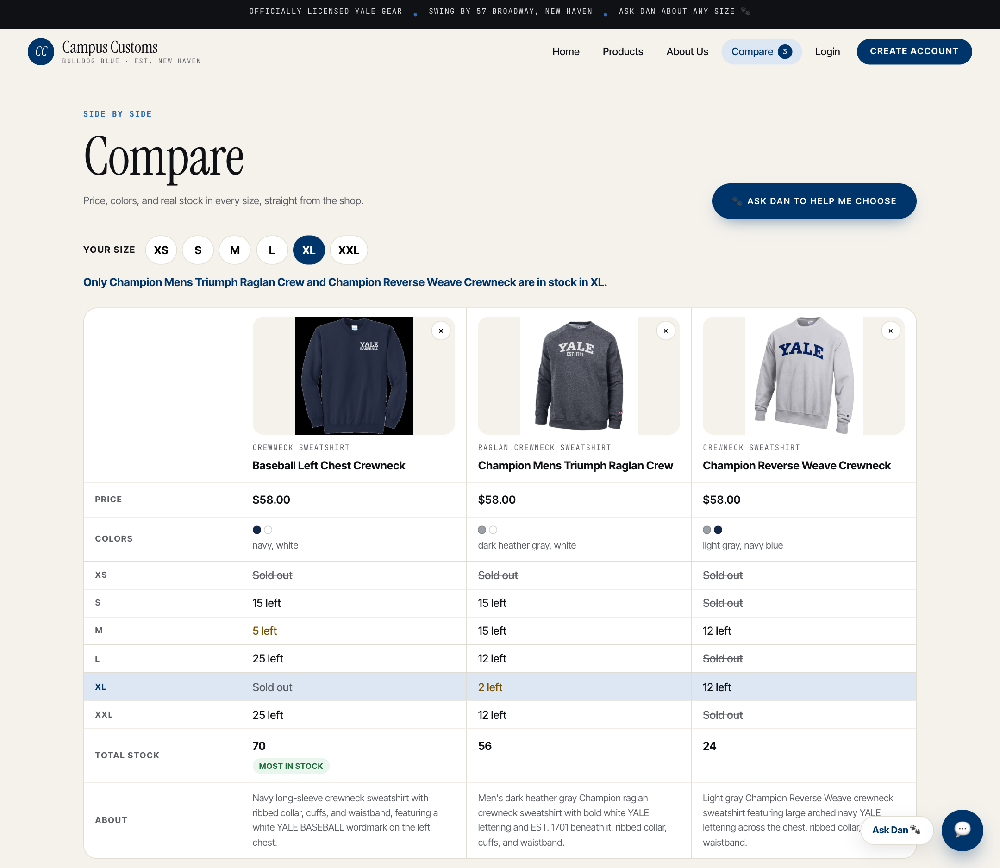
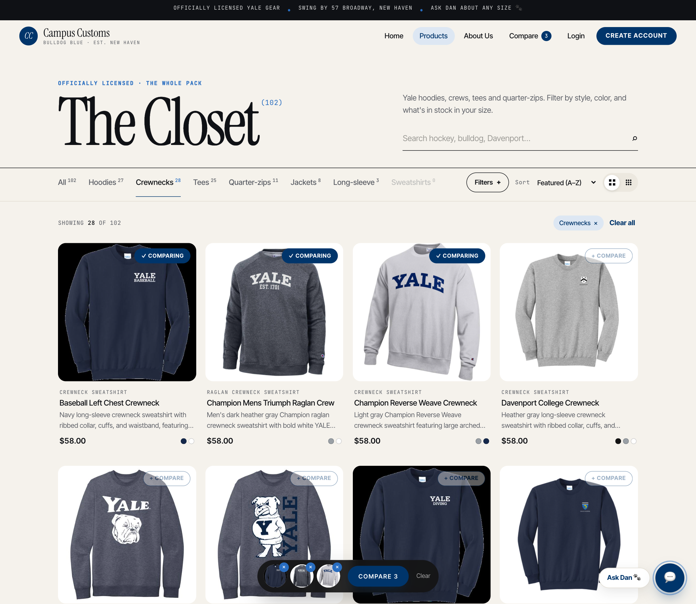

Campus Customs — Live App Check
| # | Check | Result |
|---|---|---|
| 1 | Chat checks an item's inventory level and price from the database | ✓ Pass |
| 2 | A category question ("What hoodies do you have?") puts product cards on the page | ✓ Pass |
| 3 | Problem 9 usability feature: Compare, with a size-by-size stock grid | ✓ Pass |
Chat checks inventory: honest stock and price from the database
Steps: opened the Baseball Left Chest Crewneck page, opened the chat, and asked "How much is the Baseball Left Chest Crewneck, and do you have it in XL or M?"

Proves: Dan looked the item up with the get_product_details and
check_stock tools. He answered with the real price ($58), the real M stock (5), and said
plainly that XL is sold out. He then offered in-stock XL alternatives instead of pretending.
Database: catalogue.price = 58.0; inventory M = 5, XL = 0. The same numbers
appear on the page's own size grid behind the chat (M "5 left", XS "Sold out"). The suggested alternatives also
match the database: District Vit Standing Bulldog XL = 5, Diving Left Chest XL = 5, Hype And Vice Offside XL = 20.
Category question → dynamic product cards on the page
Steps: opened the About Us page (which shows no products), opened the chat, and asked "What hoodies do you have?"

Proves: The agent called search_products and returned structured
matches. The website rendered them as a "Yale Hoodies · 27 products" section of cards (image, name, price,
short description) on a page that had no products before.
Database: 27 catalogue rows are hoodies, and the prices match (e.g. Basic Hoodie Big Yale $68, Champion Full Zip Hood $88).

/products/basic-hoodie-big-yale,
large image plus full details), so the cards the chat adds still link to the detail view.Usability feature: Compare with real stock in every size
Steps: on Products → Crewnecks, clicked "+ Compare" on three crewnecks, clicked "Compare 3" in the tray, then picked size XL.

Proves: The Compare page shows three products side by side with price, colors, and stock for every size. Picking XL highlights that row and gives a plain verdict: "Only Champion Mens Triumph Raglan Crew and Champion Reverse Weave Crewneck are in stock in XL."
Database: XL = 0 / 2 / 12 for the three crewnecks, all priced $58.00. Total stock 70 / 56 / 24, so "Most in stock" correctly goes to the Baseball Left Chest Crewneck.
